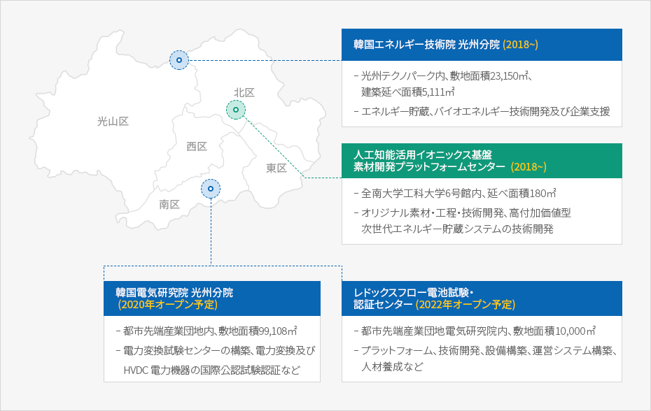

エネルギー産業
- Home
- 主要産業
- エネルギー産業
全国初エネルギー産業融複合団地＊運営
エネルギー産業と関連産業の集積および融合複合の促進を 目的として造成された地
- 対象地域 : 都市先端、先端、平洞、光グリーン産業団地など
- 指 定 : 2019年11月
- 支援内容 : 基盤施設および人材育成支援、専門研究機関の指定および研究 · 開発 · 管理などを支援、国際交流支援、エネルギー特化企業支援、優先購入支援
エネルギー産業研究インフラの拡充


- 한국에너지기술원 광주분원 (2018~)
- 광주테크노파크 內, 부지면적 23,150㎡, 건축연면적 5,111㎡
- 에너지저장, 바이오에너지 기술개발 및 기업지원
- 인공지능활용 이오닉스 기반 소재 개발 플랫폼 센터 (2018~)
- 전남대 공과대학 6호관 內, 연면적 180㎡
- 원천소재·공정·기술개발, 고부가가치형 차세대 에너지 저장 시스템 기술개발
- 한국전기연구원 광주분원 (2020년 개소예정)
- 도시첨단산업단지 內, 부지면적 99,108㎡
- 전력변환시험센터 구축 전력변환 및 HVDC 전력기기 국제공인시험인증 등
- 레독스 흐름전지 시험·인증센터 (2020년 개소예정)
- 도시첨단산업단지 전기연구원 內, 부지면적 10,000㎡
- 플랫폼, 기술개발, 장비구축, 운영체계 구축, 인력양성 등